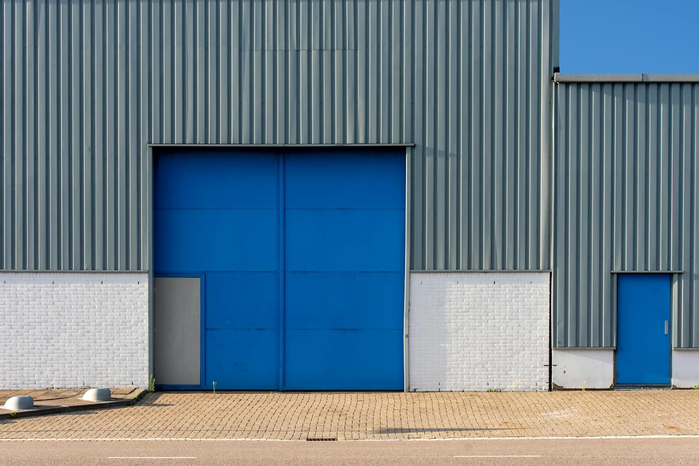
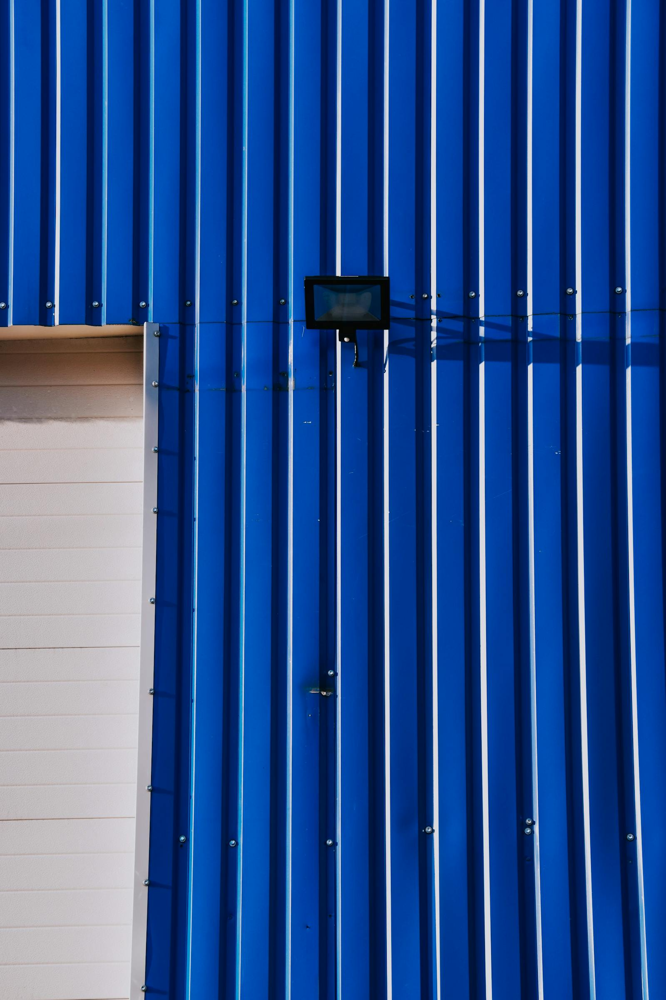
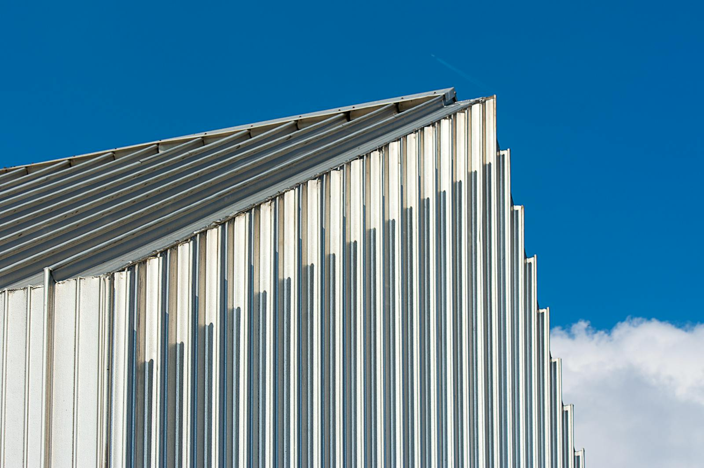
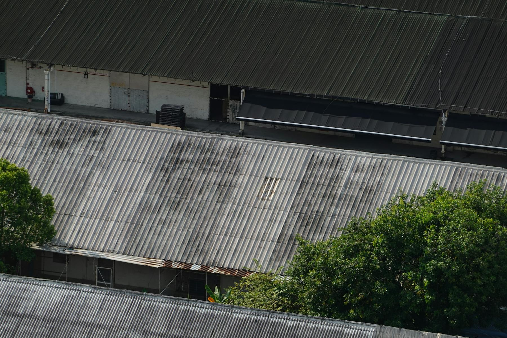
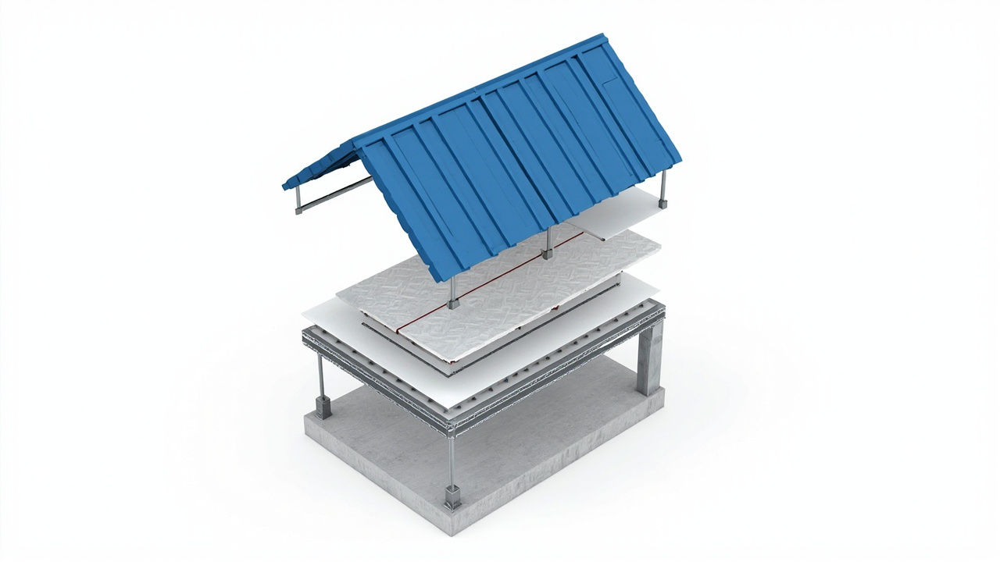

现场测量
根据屋面跨度、坡度、檩条位置和排水方向确定方案。
本地施工 · 彩钢瓦安装 · 拆旧翻新
蓝色彩钢瓦、厂房屋顶、车棚雨棚、活动板房、旧棚拆除更换，一站式上门看场与清楚报价。
根据屋面跨度、坡度、檩条位置和排水方向确定方案。
关注螺钉间距、搭接方向、边角收口和防水节点。
材料、人工、拆旧、运输等费用尽量提前说明。
工业屋面不是只看颜色
彩钢瓦屋面长期暴露在风、雨、日照和温差环境中。成余彩钢瓦按实际场地判断材料厚度、固定方式、 搭接方向、屋脊和墙边收口，适合厂房、仓库、车棚、雨棚、农用棚和活动房等实用场景。
高清实拍参考
页面加入真实工业建筑照片作为参考画廊，和 Minimax 生成的视频/结构图配合使用。完工展示突出整洁线条， 旧屋面照片只放在“翻新前”语境中，避免把老化屋面误当成施工成果。




颜色展示
蓝色稳重清爽，红色醒目传统，绿色适合庭院与农用场景，灰白色简洁耐看。实际颜色以现货和样板为准。
适合厂房、仓库、车棚，大面积铺设整齐耐看，工业感强。
明快醒目，适合临街棚面、活动房和需要清爽外观的屋顶。
视觉轻盈，适合小面积雨棚、院内棚和外观更亮的场地。
接近传统屋面观感，适合民房、院落、门面雨棚。
识别度高，适合门头、棚面和需要突出形象的位置。
与自然环境协调，适合农用棚、庭院棚和临时仓储区。
颜色柔和，适合院落、农具棚、轻型库房等实用场景。
干净利落，适合厂区、简易房和需要低调外观的建筑。
明亮简洁，常用于墙面、围护和希望降低视觉重量的屋面。
外观清爽，适合小棚、活动房和采光要求更高的场地。
沉稳耐看，适合现代厂房、仓库和工业园区。
更有装饰性，适合门面雨棚、展示区和局部造型棚。
蓝瓦结构 / 拆旧翻新
蓝色彩钢瓦常用于厂房、棚房、车棚和活动房屋面。施工前先判断旧瓦、檩条、支架和排水条件； 需要拆旧时从上到下、逐块处理，清理固定点，再按新瓦搭接和防水收边要求安装。

主营产品与服务
承接厂房、仓库、车棚、雨棚、活动房等彩钢瓦铺设安装。
蓝瓦外观整齐，适合工业厂区、临时棚房和大面积屋面翻新。
针对老化、锈蚀、漏水屋面，提供拆旧、清理和新瓦更换。
可配合彩钢瓦施工，承接简易棚、车棚、仓储棚等搭建需求。
屋脊、墙边、转角和搭接缝重点处理，减少雨天渗漏隐患。
根据尺寸、用途、预算和现场条件，安排合适材料与施工方式。
适合这些场地
工程案例
以下为高清实拍参考图与案例呈现方式示例。后续替换为成余彩钢瓦本地施工实拍后，页面结构无需再改。
拆除老旧屋面，更换蓝色彩钢瓦，屋面线条更整齐。
根据仓库跨度和使用需求铺设彩钢瓦，提升遮雨环境。
适合农具、物料和临时存放区，施工灵活，维护方便。
施工流程
说明位置、面积、用途、是否需要拆旧。
确认尺寸、结构、运输条件和施工难点。
选择颜色、材料规格、施工方式和报价范围。
按现场情况组织材料和人员进场安装。
确认固定、搭接、收边、防水和现场清理。
常见问题
常用有蓝色、红色、绿色、灰色、白色等，具体颜色以材料现货和样板为准。
可以。一般会先看旧瓦锈蚀、漏水和底部结构情况，再确定拆旧和更换方式。
通常和面积、材料规格、现场高度、是否拆旧、运输距离、结构复杂程度有关。
可以咨询。门面雨棚、院内小棚、局部换瓦等都可以根据实际情况确认。
需要彩钢瓦安装、拆旧或翻新？
建议来电前准备：大概面积、施工地址、是否有旧瓦、想选的颜色、现场照片。